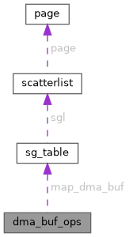

|
XenevaOS
|
#include <dma-buf.h>

Public Attributes | |
| int(* | attach )(struct dma_buf *, struct dma_buf_attachment *) |
| void(* | detach )(struct dma_buf *, struct dma_buf_attachment *) |
| int(* | pin )(struct dma_buf_attachment *attach) |
| void(* | unpin )(struct dma_buf_attachment *attach) |
| struct sg_table *(* | map_dma_buf )(struct dma_buf_attachment *, enum dma_data_direction) |
| void(* | unmap_dma_buf )(struct dma_buf_attachment *, struct sg_table *, enum dma_data_direction) |
| void(* | release )(struct dma_buf *) |
| int(* | begin_cpu_access )(struct dma_buf *, enum dma_data_direction) |
| int(* | end_cpu_access )(struct dma_buf *, enum dma_data_direction) |
| int(* | mmap )(struct dma_buf *, struct vm_area_struct *vma) |
| int(* | vmap )(struct dma_buf *dmabuf, struct iosys_map *map) |
| void(* | vunmap )(struct dma_buf *dmabuf, struct iosys_map *map) |
struct dma_buf_ops - operations possible on struct dma_buf @vmap: [optional] creates a virtual mapping for the buffer into kernel address space. Same restrictions as for vmap and friends apply. @vunmap: [optional] unmaps a vmap from the buffer
| int(* dma_buf_ops::attach) (struct dma_buf *, struct dma_buf_attachment *) |
@attach:
This is called from dma_buf_attach() to make sure that a given &dma_buf_attachment.dev can access the provided &dma_buf. Exporters which support buffer objects in special locations like VRAM or device-specific carveout areas should check whether the buffer could be move to system memory (or directly accessed by the provided device), and otherwise need to fail the attach operation.
The exporter should also in general check whether the current allocation fulfills the DMA constraints of the new device. If this is not the case, and the allocation cannot be moved, it should also fail the attach operation.
Any exporter-private housekeeping data can be stored in the &dma_buf_attachment.priv pointer.
This callback is optional.
Returns:
0 on success, negative error code on failure. It might return -EBUSY to signal that backing storage is already allocated and incompatible with the requirements of requesting device.
| int(* dma_buf_ops::begin_cpu_access) (struct dma_buf *, enum dma_data_direction) |
@begin_cpu_access:
This is called from dma_buf_begin_cpu_access() and allows the exporter to ensure that the memory is actually coherent for cpu access. The exporter also needs to ensure that cpu access is coherent for the access direction. The direction can be used by the exporter to optimize the cache flushing, i.e. access with a different direction (read instead of write) might return stale or even bogus data (e.g. when the exporter needs to copy the data to temporary storage).
Note that this is both called through the DMA_BUF_IOCTL_SYNC IOCTL command for userspace mappings established through @mmap, and also for kernel mappings established with @vmap.
This callback is optional.
Returns:
0 on success or a negative error code on failure. This can for example fail when the backing storage can't be allocated. Can also return -ERESTARTSYS or -EINTR when the call has been interrupted and needs to be restarted.
| void(* dma_buf_ops::detach) (struct dma_buf *, struct dma_buf_attachment *) |
@detach:
This is called by dma_buf_detach() to release a &dma_buf_attachment. Provided so that exporters can clean up any housekeeping for an &dma_buf_attachment.
This callback is optional.
| int(* dma_buf_ops::end_cpu_access) (struct dma_buf *, enum dma_data_direction) |
@end_cpu_access:
This is called from dma_buf_end_cpu_access() when the importer is done accessing the CPU. The exporter can use this to flush caches and undo anything else done in @begin_cpu_access.
This callback is optional.
Returns:
0 on success or a negative error code on failure. Can return -ERESTARTSYS or -EINTR when the call has been interrupted and needs to be restarted.
| struct sg_table *(* dma_buf_ops::map_dma_buf) (struct dma_buf_attachment *, enum dma_data_direction) |
@map_dma_buf:
This is called by dma_buf_map_attachment() and is used to map a shared &dma_buf into device address space, and it is mandatory. It can only be called if @attach has been called successfully.
This call may sleep, e.g. when the backing storage first needs to be allocated, or moved to a location suitable for all currently attached devices.
Note that any specific buffer attributes required for this function should get added to device_dma_parameters accessible via &device.dma_params from the &dma_buf_attachment. The @attach callback should also check these constraints.
If this is being called for the first time, the exporter can now choose to scan through the list of attachments for this buffer, collate the requirements of the attached devices, and choose an appropriate backing storage for the buffer.
Based on enum dma_data_direction, it might be possible to have multiple users accessing at the same time (for reading, maybe), or any other kind of sharing that the exporter might wish to make available to buffer-users.
This is always called with the dmabuf->resv object locked when the dynamic_mapping flag is true.
Note that for non-dynamic exporters the driver must guarantee that that the memory is available for use and cleared of any old data by the time this function returns. Drivers which pipeline their buffer moves internally must wait for all moves and clears to complete. Dynamic exporters do not need to follow this rule: For non-dynamic importers the buffer is already pinned through @pin, which has the same requirements. Dynamic importers otoh are required to obey the dma_resv fences.
Returns:
A &sg_table scatter list of the backing storage of the DMA buffer, already mapped into the device address space of the &device attached with the provided &dma_buf_attachment. The addresses and lengths in the scatter list are PAGE_SIZE aligned.
On failure, returns a negative error value wrapped into a pointer. May also return -EINTR when a signal was received while being blocked.
Note that exporters should not try to cache the scatter list, or return the same one for multiple calls. Caching is done either by the DMA-BUF code (for non-dynamic importers) or the importer. Ownership of the scatter list is transferred to the caller, and returned by @unmap_dma_buf.
| int(* dma_buf_ops::mmap) (struct dma_buf *, struct vm_area_struct *vma) |
@mmap:
This callback is used by the dma_buf_mmap() function
Note that the mapping needs to be incoherent, userspace is expected to bracket CPU access using the DMA_BUF_IOCTL_SYNC interface.
Because dma-buf buffers have invariant size over their lifetime, the dma-buf core checks whether a vma is too large and rejects such mappings. The exporter hence does not need to duplicate this check. Drivers do not need to check this themselves.
If an exporter needs to manually flush caches and hence needs to fake coherency for mmap support, it needs to be able to zap all the ptes pointing at the backing storage. Now linux mm needs a struct address_space associated with the struct file stored in vma->vm_file to do that with the function unmap_mapping_range. But the dma_buf framework only backs every dma_buf fd with the anon_file struct file, i.e. all dma_bufs share the same file.
Hence exporters need to setup their own file (and address_space) association by setting vma->vm_file and adjusting vma->vm_pgoff in the dma_buf mmap callback. In the specific case of a gem driver the exporter could use the shmem file already provided by gem (and set vm_pgoff = 0). Exporters can then zap ptes by unmapping the corresponding range of the struct address_space associated with their own file.
This callback is optional.
Returns:
0 on success or a negative error code on failure.
| int(* dma_buf_ops::pin) (struct dma_buf_attachment *attach) |
@pin:
This is called by dma_buf_pin() and lets the exporter know that the DMA-buf can't be moved any more. Ideally, the exporter should pin the buffer so that it is generally accessible by all devices.
This is called with the &dmabuf.resv object locked and is mutual exclusive with @cache_sgt_mapping.
This is called automatically for non-dynamic importers from dma_buf_attach().
Note that similar to non-dynamic exporters in their @map_dma_buf callback the driver must guarantee that the memory is available for use and cleared of any old data by the time this function returns. Drivers which pipeline their buffer moves internally must wait for all moves and clears to complete.
Returns:
0 on success, negative error code on failure.
| void(* dma_buf_ops::release) (struct dma_buf *) |
@release:
Called after the last dma_buf_put to release the &dma_buf, and mandatory.
| void(* dma_buf_ops::unmap_dma_buf) (struct dma_buf_attachment *, struct sg_table *, enum dma_data_direction) |
@unmap_dma_buf:
This is called by dma_buf_unmap_attachment() and should unmap and release the &sg_table allocated in @map_dma_buf, and it is mandatory. For static dma_buf handling this might also unpin the backing storage if this is the last mapping of the DMA buffer.
| void(* dma_buf_ops::unpin) (struct dma_buf_attachment *attach) |
@unpin:
This is called by dma_buf_unpin() and lets the exporter know that the DMA-buf can be moved again.
This is called with the dmabuf->resv object locked and is mutual exclusive with @cache_sgt_mapping.
This callback is optional.